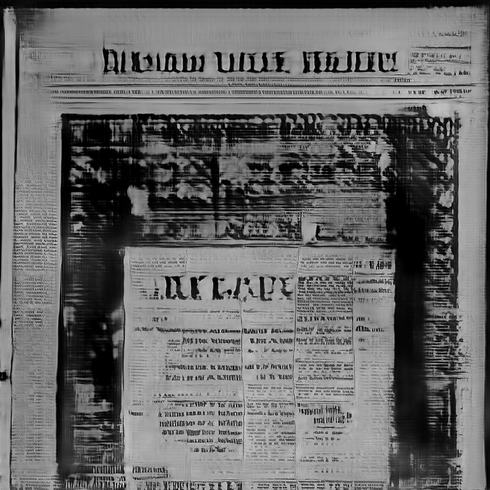

Original photo by
Anders Nord
on
Unsplash
1/8
←
→
(home)

 Original photo by Anders Nord on Unsplash
Original photo by Anders Nord on Unsplash
Original photo by Anders Nord on Unsplash
Original photo by Anders Nord on Unsplash